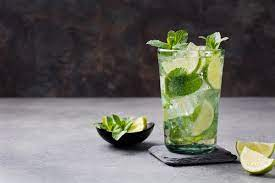

Mojito

Description
Mojito is a traditional Cuban highball made of white rum.
Its combination of sweetness, citrus, and herbaceous mint flavors
has made the mojito a popular summer drink
Ingredients
- Juice of 1 lime
- 1 tsp granulated sugar
- Small handful mint leaves, plus extra sprig to serve
- 60ml white rum
- Soda water, to taste
Steps
- Muddle the lime juice, sugar and mint leaves in a small jug,
crushing the mint as you go.
- Pour into a tall glass and add a handful of ice.
- Pour over the rum, stirring with a long-handled spoon.
- Top up with soda water, garnish with mint and serve.